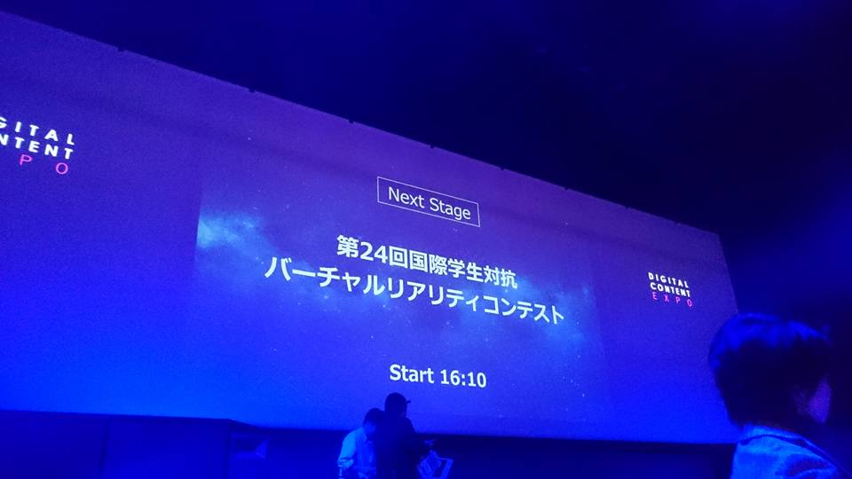
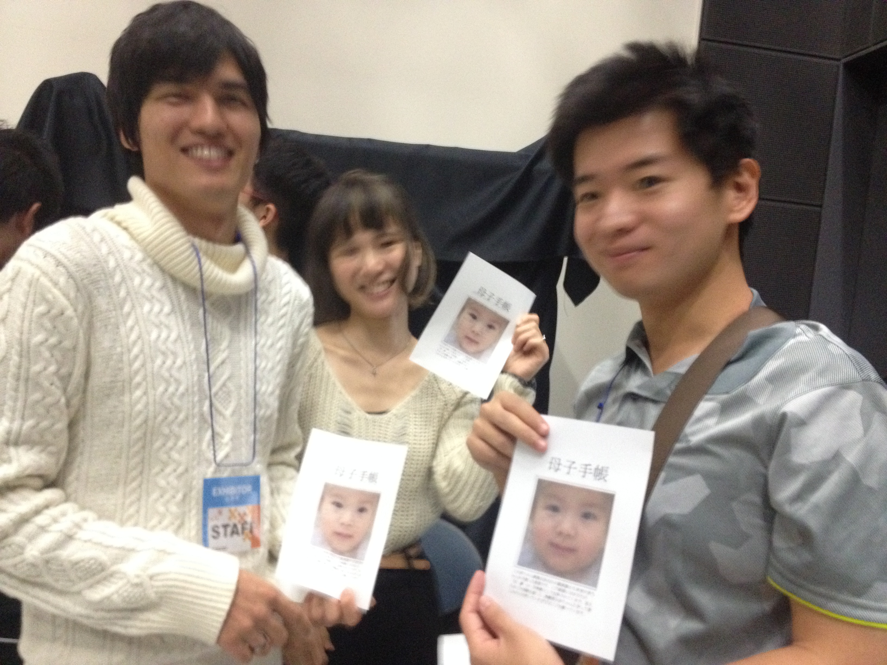
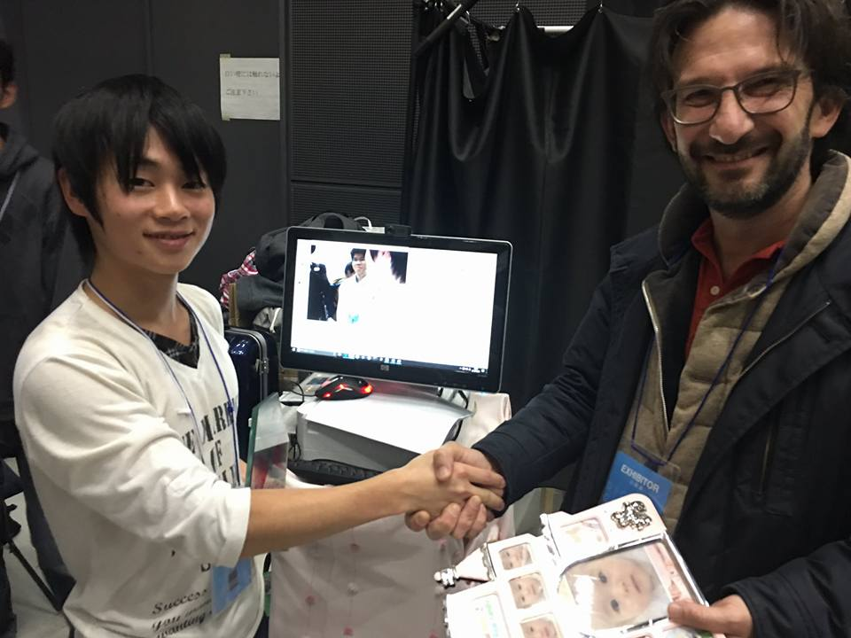
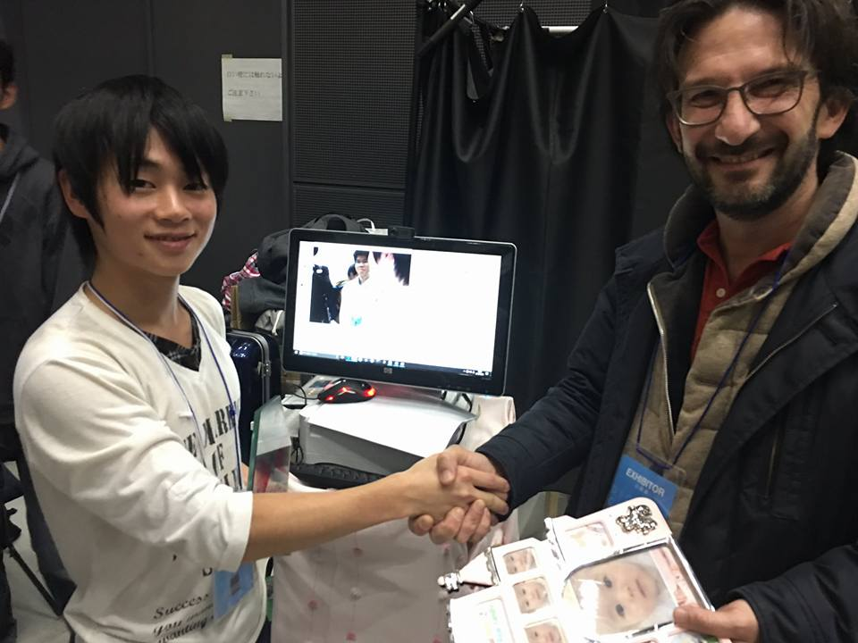
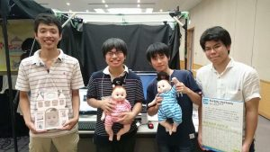
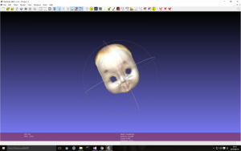
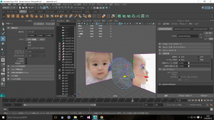
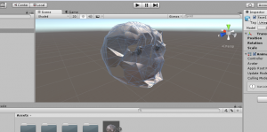
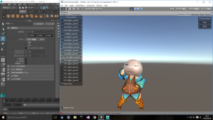
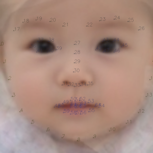

dlibでOpenCVが使えるかもしれない件
2016年11月15日 (開発者日記)
dlibのメソッド見てたらこんなん見つけた

・・・これ完全にOpenCVと親和性あるんじゃね？
試してみたらマジでありました。
後日コードを載せます。
投稿者: 錦澤 竜也
2016年11月15日 (開発者日記)
dlibのメソッド見てたらこんなん見つけた
・・・これ完全にOpenCVと親和性あるんじゃね？
試してみたらマジでありました。
後日コードを載せます。
投稿者: 我妻 大樹
2016年11月9日 (開発者日記)
こんにちは、ハード担当の我妻と代表の望月です。
今回は決勝大会を振り返ってみたいと思います。
———– 前日（10/28）———–
開場時間が10：00～なのでなるべく早く会場入りしたいところですが、本厚木にある大学から東京テレポートには二時間かかります。
メンバー全員が寝坊しない、現実的な時間（しても起こしに行けるくらいの時間？）として11時過ぎに会場入りしました。

自分は初めて日本科学未来館にいったのですが、ガラス張りできれいな建物でした。
今回は、通常の入り口でなはなく出展者入り口で入ります。
先に会場に送っていた荷物を受け取り、骨組みを完成させて、いったんお昼にしました。近くにコンビニがあり助かります！

ということで、お昼過ぎからブースの設営を再開します。こんな感じでブースの設営が終わりました。大体16時頃だったと思います。

が、チームのメンバーにやってもらうと不親切さが目立つと言われました…
プログラム的なバグは前日までに直していたのですが体験の修正はしていなかったのでここにきて…という気持ちはありましたが
会場内でできる限りわかりやすくしようと修正しました。
しかし、撤収時間は20：30までなので限られた時間ではありましたが、なんとかある程度まで修正を間に合わせることができました。
この日は20時過ぎに解散して次の日に備えることにしました。
———– 審査当日（10/29）———–
この日は10：00～12:00展示審査なので、すこし早めに集まります。
8：30に会場入りをし最後の動作テストと、体験のフローを確認しました。
審査ではVRコンテンツでの視線誘導を促す方法や、顔画像についての学術的な意見を頂き、この展示を通して「Real baby / Real family」の発展に繋がる非常に大切な時間となりました。
審査時間が終わってからは、IVRCブースも一般開放され、たくさんの方にコンテンツを体験して頂くことが出来ました。
私たちのコンテンツは、友達同士や家族で来られた方に非常に好感触でした！
私たちのブースを去った後にも体験者にプレゼントした母子手帳に載せてある赤ちゃん画像を見比べて楽しんでいる様子が見ることができました。
夏からこのコンテンツを制作してきて良かったと思える最高の瞬間だったと思います。
また、体験者の中で二次元画像から推測した赤ちゃんを作りたいという方が来られ、私たちの企画の新たな切り口を発見することができました。
16:00からは表彰式がありました。

今年は多くの協賛企業賞がありましたが、残念ながら私たちは受賞することができませんでした。
しかし、ほかのチームの作品も私たち同様に予選会からブラッシュアップを重ねており、さすがだと思うばかりでした。
授賞式終盤、企業賞の次に、フランスのLavalで展示することができる大変栄誉ある賞、Laval virtual賞の発表がありました。
ここまで、VR学会賞や協賛企業賞を受賞できなく、何一つとして賞をとって帰れないんじゃないかという思いや、
自分たちの英語力やフランスの示唆、Laval virtualのテーマとの関係性から受賞できるかもしれないという思いの中、
Laval virtualの委員であるLaurentさんに呼ばれたのは私たちでした。嬉しさと驚きを感じながら壇上に上がりました。
IVRCのグランプリは逃してしまいましたが、それ以上のものを勝ち取ることができたと思います。

その後はIVRCの懇談会があり、私たちチームのスポンサーとして作品を支えてくれた富士通SSLの方や、IVRCの協賛企業の方、
夏からずっと私たちをずっと支えてきてくれた先輩方に挨拶し、また、他のチームの方とも交流を深めることが出来ました。

———– 一般開放日（10/30）———–
一般開放日は多くの方に私たちの企画を体験して頂くため、赤ちゃんをあやす体験のほかに2人の顔から赤ちゃんの顔を推測するのみのブースを作りました。
そこで私たちが使用していたカメラの画角の狭さが良い方向に働き、撮影する際には体験者さん2人にとても近づいていただきました。
ふと思ったのですが、それだけでコミュニケーションツールとして大いに機能するのではないかと思いました。

Laval virtual賞をいただいた記念として、Laurentさんと写真を撮らせていただきました。
Laurentさんに、「もっといろいろなことを経験して、もっともっとこの作品を向上してほしい！」と激励されました。
この言葉を胸に3月のLaval virtualにむけて、「Real baby/ Real family」をよくしていきます！
 

この日はIVRC2016として作品を展示するのは最後ということもあり、他の作品を体験しに行きました。
どの作品も予選よりも強化されており、開発欲のそそられる作品ばかりでした。
また、他のIVRCチームの方にも私たちの作品を体験して頂き、交流を深めることができました。
来年も日本科学未来館で展示ができるように、さらなるスキルアップを目指したいです。
IVRC実行委員会や協賛企業の方々、個人的ではありますがスポンサーの富士通SSLのご協力のお陰で盛会に終わることができました。
また「Real baby / Real family」も100人を超える多くの方々に体験して頂き、開発者としても嬉しい限りです。
「Real baby / Real family」はLavalに向けて進化できるように、これからも尽力致しますので、ご支援ご協力の程、宜しくお願いします。
投稿者: 望月 宥冶
2016年10月23日 (開発者日記)
こんにちは。
明るい家族計画の望月です。
少し遅くなりましたが、IVRC予選会の様子をお届けします。
————————————前日設営日———————————–
朝早く大学に集合し、コンテンツで使用する紙を確保するために、A4用紙を持ち寄り、裁断機でA5サイズに…
余裕をもって大学を出発し、秋葉原でブースを彩るためのフォトフレームや写真用紙を購入。
移動中の荷物がとても重く、会場に着いた頃にはメンバー全員疲れきっていました。
予定時間より早く機材が届いていたので、到着後すぐに筺体の組み立てに入ることができました。

筺体組み立て後は宿に帰り、印刷物の確認をしました。
しかしプリンタの調子が悪く、原因を追及したところ、移動時起きたインクの偏りと自作したA5の紙が悪さをしていたので、紙を市販のものにして、プリンタをクリーニングしたら正常に動いてくれました。
————————————1日目(審査日)———————————–
会場に到着したら、プリンタを設置しなおし一度クリーニング。
しかし、コンテンツを動かしてみるとViveがデフォルト画面のまま動かない不具合…
迷った末、我妻君のVR環境対応のノートPCを使うことになりました。
やはり、高い部品や製品であっても予備があると安心できます。
この日はプレゼンテーションの日でした。
私たちのコンテンツはインストラクター2~3人推奨でしたが、プレゼンテーション中は我妻君が頑張ってくれました。
プレゼン中に企業の方が沢山ブースに来たようで、このときIVRCシールをねだっておけば…と少し後悔しました。
また、外国人の方に英語対応する機会があったようで、今後のことを含めて、英語でのコンテンツ説明も練習しなければならないと思いました。
後半は東京ゲームショウの方の展示設営に向かっていた浅野君と合流し、4人でコンテンツを回すことができました。
一日目終了後、メイン機でViveが動かない問題を解決するために、パソコンをホテルに持ち帰り整備しました。
また、チームの別働隊（望月、浅野君）で秋葉原に行き、ヘッドホンを購入し、体験の回転効率の向上を図りました。
————————————2日目（結果発表日）———————————–
2日目は1日目に持って帰ったメイン機の設営と試運転のため、朝早く会場に行き入り口待機
会場でも無事 メイン機でViveが動き2日目からはデスクトップPCでコンテンツを動かすことができました。
作品コンセプト「これはあなたの未来の赤ちゃんに会えるVRメディアアート作品です」
一般の方にはとても好印象で、たくさんの方にコンテンツを体験して頂けました。
後半は体験者への対応に慣れてきましたが、午前中コンテンツを回していただけなのに、とても疲れました。
この日は夕方から結果発表があったので、それまで待機。
結果は10位入賞し、決勝大会進出！！
その後はつくばの麺や 蒼 （AOI）で祝賀会ラーメン
ホテル到着後この日はひさびさの？自由時間
ホテルでテレビ見ながらゆっくりできました。


————————————3日目（一般公開日）———————————–
3日目（一般公開日）
チームメンバーで1人ずつ30分間の休憩を回しながら気になるIVRC作品探索
その後1時間休憩をはさんで、お昼兼IVRC作品探索兼企業出展を見る時間に
耳トンネル、しょくどう、ブラジル、浮世絵
多くの方にReal baby / Real family を紹介しました。
2人プレイで体験されていく方はやはり反応が良く、ブースを出たあとに証明書を見せ合ったりしているところが私のモチベーションを高くさせてくれます。
また、企業の方との名刺交換や、大学生の方や、御隣のブース、御向かいのブースとも仲良くさせていただきました。
3日間トラブルはあったものの、最後まで止まることなくコンテンツを動かすことができました。


「みかけハこハゐが 全部俺である」チーム：￢広重（公立はこだて未来大学）の方と記念写真を撮りました。
決勝でまた会えるのを楽しみにしています！
終了後、片づけをしてVR学会で展示をしていた先輩方と合流してサイゼリアでお疲れさまでした会

前日設営を含めて、凄まじい4日でしたが、一日一日がとても充実感溢れるものでした。
決勝大会では、コンテンツをより良いものに仕上げ、目指せ1位で頑張りたいと思います。

投稿者: 錦澤 竜也
2016年10月21日 (開発者日記)
dlibで処理を行った後、使い慣れたopencvにデータを渡したいなーということがあると思います。
そのようなときはこうします。
dlibで画像を表すクラスはdlib::array2d<dlib::bgr_pixel>です。
それをMatクラスに渡すには「dlib/opencv.h」をインクルードして、
cv::Mat cvimage = dlib::toMat(dlibimage);
みたいに書きます。
Matクラスをarray2d<bgr_pixel>に渡すには以下のようにします。
「dlib/opencv.h」をインクルードして、
dlib::array2d<dlib::bgr_pixel> dlibimage;
assign_image(dlibimage, cv_image<bgr_pixel>(cvimage));
みたいに書きます。
以上備忘録
投稿者: 錦澤 竜也
2016年9月30日 (開発者日記)
OpenCVにおいて画像を格納するクラスはほとんどの方がcv::Matクラスを使用していると思います。Matクラスの振る舞いを理解しておくとコーディングがはかどります。
cv::Mat blue(300,300,CV_8UC3,cv::Scalar(0,0,255));
cv::Mat copy = blue;
for(int y = 0;y < copy.rows;++y){
for(int x = 0;x < copy.cols;++x){
for(int i = 0;i < 3;++i){
copy.data[copy.step * y + copy.channels() * x + i] = 255;
}
}
}
みたいなコードがあったときに、変数copyは白一色を表しますが、Mat型では初期化演算子、代入演算子ともに値のコピーを作成するのではなく参照先のコピーを作るだけです。つまりcopyが指しているメモリ空間は変数blueと共用していて、copyの値を書き換えるとblueの値も書き換わってしまいます。この結果blueは白色の画像になります。
メモリーの共有を防ぐには
cv::Mat copy = blue.clone();
という様に書きます。
OpenCVでは前者を浅いコピー、後者を深いコピーといいます。前者のほうが高速にコピーを行えます。
なぜOpenCVがこのような使用になっているかというと、画像の範囲を指定して処理を行いたいときにこの使用が生きてきます。
例えば画像の中心だけ画像処理させたいとき、このように書けます。
cv::Mat white(300,300,CV_8UC3,cv::Scalar(255,255,255));
cv::Mat roi = white(cv::Rect(150,150,150,150));
for(int y = 0;y < roi.rows;++y){
for(int x = 0;x < roi.cols;++x){
for(int i = 0;i < 3;++i){
roi.data[roi.step * y + roi.channels() * x + i] = 0;
}
}
}
このコードでは白い画像の中心150*150ピクセルが黒色になります。
このように画像の範囲を指定して処理を行いたいときに、威力を発揮します。（自分はそれしか知りませんが、ほかにも使用用途があれば教えてください…）
投稿者: 錦澤 竜也
2016年9月28日 (開発者日記)
チーム明るい家族計画が開発で行ったことを紹介します。
ハード担当の我妻です。ハード担当といっても予選まではほとんどプログラムのお手伝いしかしていませんでした。
なので数少ないハード関連の紹介です。
Arduinoはオープンソースなハードおよびソフトとして有名で、近年のIVRCでも多くのチームが使用しています。
しかし、製品版をそのまま買ってきて使用しているチームがおおく、さらにはブレッドボードで展示もみられる始末です。
組み込み機器を専攻している自分としては、自作してみたいと常々思っていました。
そこでネットに落ちている回路図と学科で習った基板加工の授業を思い出しながら作成してみました。
部品は秋葉原の秋月や千石で買ってきて、一台おおよそ1500円程度で作成できました。
書き込み機の部分が800円ほどかかり、本体部だけなら600円少しといったところでしょうか。
回路があっているか少し不安ですが、一応動作もチェックできて一安心といったとこです。


写真だとわかりずらいですが、結構コンパクトにまとめられました。
まだコア部分の作成で止まっているのですが、これから使うセンサやらを確定させてメインボードのほうも完成させたいですね。
本選ではハード担当として、チームに貢献したいです。
投稿者: 望月 宥冶
2016年9月18日 (開発者日記)
こんにちは。
明るい家族計画の望月です。
HTC ViveのUDP通信に成功しました。
初期の段階では、UNETを使うのかUDPを使うのか決まらず、どちらも試してみました。
UNETを試した際に、SteamVR pluginのGameObjectをそのまま生成すると、1つのシーンで2つ以上のSteamVRが存在してしまいます。
これによりデバイスの取り合いが起こり、そのままでは使用できません。また、この競合を回避しようにも大幅なレイテンシーにより実用とはいきませんでした。
よって、今回はUNETを使用するのではなくUDP通信によりお互いのViveのpositionとrotationを送りあうようにして解決しました。
注意しなければならないのが、お互いにデータを送り付けているだけなので、基本的には同期処理はしていません。
（今回はほとんど同スペックのPCをローカルの有線接続しているので、致命的なエラーは出ないだろうという考えです。ネット経由で使うときにはまた違ったやり方でないとレイテンシー問題があるかもしれません）
これにより送受信におけるデータ量と、受信のタイミングもこちらでコントロールできるので最終段階では100～120fpsで描画することに成功しました。
したがって、遅延は10ms以下となるので「ゼロレイテンシー」といえるのではないかと。
最後にViveコントローラーの位置に手のAssetをつけて、遊んでみました(通称：ゼロレイテンシー芸人)。
補足として、SteamVRのルームセットアップを的確に行うと、現実での位置とVR空間上の位置が一致するのですが、
それをしてしまうと、VR空間上で相手に触れたときに現実でも相手に触れてしまい、デバック中に怪我人が出てしまうので、今回はこんな感じで….
9/19 我妻追記
投稿者: 錦澤 竜也
2016年9月12日 (開発者日記)
チーム明るい家族計画です！
IVRC前日ようやく筐体が完成しました！

こんな感じで体験者は椅子に座って２人で体験するコンテンツとなっております。
大会前日にようやく資材がそろいました！
少しジョイントが甘いのでこれからジョイントを増やしていきます。
また配線があまりに汚いのでそれも要修正です。
体験のフローもまだ確認できないところが多かったので、筐体を組んでおいてよかったと思います。
時間の関係で削った部分もかなりあるので、完全版ではないですが、遜色ない内容となっております。
筐体を組み終わったら、そっこーで片づけて、機材を梱包します。
機材を梱包し集荷を待っていたら13日火曜には届かないらしい＼(＾o＾)／
しかし先輩たちが配送場まで車で届けてくれたので、危機は脱出できました。
先輩たちに感謝です。

チーム明るい家族計画の健闘を祈っています！（自分で・・・）
投稿者: 望月 宥冶
2016年8月30日 (開発者日記)
こんにちは。
明るい家族計画の望月です。
2D画像の処理がトントン拍子で進み、平均顔を使ってβ版を作ろうという話になりましたが、ここで問題発生！
2D画像をどうやって3Dに起こすのか…
Kinectで赤ちゃん人形の顔を撮影し、MeshmixerやMeshLabで加工したり、

Point Cloud Libraryというライブラリを使い、顔のメッシュを生成したりしました。
Point Cloud Libraryは点群情報と画像情報の両方を保持できるフォーマット(.ply)を使用できたので少しだけ便利でした。

最終的にたどり着いたのが、Mayaを使用し、赤ちゃんの正面画像と横画像からメッシュを生成していく方法です。




しかし、作成したメッシュをUnityにエクスポートした際にメッシュの情報が欠損し、使い物にならない結果に…

どうやら法線が裏返っておかしくなってるようで、手直しに非常に手間がかかり、これ以上はメッシュに時間を割けないので、球体に顔画像を張ることで対処。最初の段階でメッシュに関しては考えていなかったことも非常に時間を取らされてしまった感じがあり、今回のことから、妥協点を見つけるということや、ある程度やってみて、実装が非常に難しい(時間がかかる)と感じたことからは手を引く潔さが大切だと思いました。迷宮入りしそうになったときは、目に見えるタスクから終わらせること、初心に返ることを心がけ、メッシュにとりかかる前の目標であるβ版制作にとりかかろうと思います。

↑球体を若干潰したオブジェクトに顔画像を張ると、見た目が改善されます！
投稿者: 望月 宥冶
2016年8月30日 (開発者日記)
こんにちは。
明るい家族計画の望月です。
今回はdlibというC++のライブラリを使用しました。
dlibは画像処理や機械学習などの機能を持ち、顔の特徴点を取得するのに使用しました。
特徴点取得の参考画像がこちらです。

dlibに用意されている学習データを用いることで顔画像領域の切り出し、ランドマークの検出などが行えます。ちなみにOpenCVを用いても顔画像を切り出すことは可能ですが、それよりも精度よく顔画像を切り出すことができます。
またランドマークはdlibによって、ソートされて出力されるので、モーフィングなどで重要な対応点なども簡単に調べることができます。
こんな感じで対応点をソートしてくれます。
ただdlibの導入は少し面倒なのでCMakeの使い方には慣れておいたほうが良いかもしれません。
まだ慣れていないのもありますが構文もかなり難しいです。
また、特徴点が取得できたので、赤ちゃんの平均顔画像も作成しました。
平均顔画像の作成にはOpenCVを使用しました。

平均顔の赤ちゃんは非常に可愛いです。
この可愛い赤ちゃん画像から若年変化について考えていきたいと思います。
投稿者: 望月 宥冶
2016年8月30日 (開発者日記)
こんにちは。
明るい家族計画の望月です。
7月23日、24日に行ったハッカソンの2日目の様子です。2日目の目標は「Wiiリモコンの値で赤ちゃんを制御」、「Mayaで作成したオブジェクトをUnityで読み込み」、「赤ちゃんをViveで制御」です。Mayaで作成したオブジェクトの読み込みは錦澤君が事前にベットのモデルを作成してきてくれていたので、スムーズに行うことができました。球体の読み込みは200*200頂点くらいのものから若干重くなった気がしましたが、許容範囲内でした。

Wiiリモコンによる制御は、加速度センサの値を取得し、そこから角度を割り出し赤ちゃん(Unityちゃん)と同期。赤ちゃん人形の服の中にWiiリモコンを隠し完成。出来上がったのがこちらです。
Viveによる制御では、素晴らしいものを生み出してしまいました。なにやらサマーレッスン(ロリ)みたいなもので、これを基盤に商品にできそうなイメージでした。プログラム的には、ハッカソン1日目に行ったSteamVRの応用で、あとはHMDを被ったときに違和感がないかどうか調整して完成です。
今回のハッカソンでわかったことはViveが凄いということと、赤ちゃんをどう可愛いと思わせるかが大切だと思いました。今回はUnitychanの迫力が強すぎたということもあると思うので、完成品ではUnitychanを上回れるような作品作りをしていきたいと思います。
投稿者: 望月 宥冶
2016年8月30日 (開発者日記)
こんにちは。
明るい家族計画の望月です。
7月23日、24日に行ったハッカソンの1日目の様子です。1日目の目標は「unityを触ること」、「SteamVRの使い方」でしたが、とても良い流れで進んで行き、Kinect v2にも少し触れることができたので、1日目は大成功でした。
浅野君が作成してきてくれたスライドを元に作業を進めた結果、午後までかかる見通しのブロック崩し完成が午前中で終了してしまったため、その後、一足先に午後のSteamVRを我妻君主導のもと勉強しました。

その後、先ほどUnityで製作したブロック崩しをViveで操作できるようにしたのがこちらです。
一段落したのち、ゲークリで途中抜けしていた浅野君と合流し、来来亭で昼飯兼夕飯を食べ、Kinectを触るはずが、Kinectを動かすために必要なSDK(ver2.0)がWindows7では動かないことが判明し、Windows10にアップグレード。なんとかKinectを動かし、サンプルプログラムから赤ちゃんを3Dスキャンしました。

赤ちゃんの深度がうまく読み取れているのか疑問が生じましたが、隣に移ってる人の深度はしっかり読み取れていたので一安心。人形程度の凹凸だとあまりよくないようですが、人間相手なら十分使い物になると思います。
ソフトウェア的なことはここまでで終わりですが、夜に合流した武田君とパソコンを組み立てて、1日目は解散しました。余談ですが最近のBIOSがしっかりしすぎていて、すこし驚きました。


投稿者: 望月 宥冶
2016年8月30日 (開発者日記)
こんにちは。
明るい家族計画の望月です。
前回のハッカソンで作成したwiiリモコンを使った赤ちゃん制御を改良し、HMDで制御できるようにしました。
発表会の様子も載せておきます。
ゲームデザインのより深いところを考えられるような発表会になりました。
「可愛い」についての論文を読みつつ、顔画像についても挑戦していきたいと思います。
投稿者: 望月 宥冶
2016年8月30日 (開発者日記)
初めまして。
明るい家族計画の望月と申します。
IVRCに応募した企画書が無事当選し、今後はプロトタイプ制作に励みたいと思います。
今回はチームメンバーと企画について紹介していこうと思います。
明るい家族計画のリーダーであり、”Real baby / Real family”の立案者。Blogの記事は主に私が書いていきます。
顔技術担当。顔に対する情熱が凄まじい。この企画の要。
コンテンツ担当。企画書制作以降からチームに加わって頂き、Unityを自由に使いこなす。別プロジェクトにも参加しているようで多忙。
ハードウェア系、VR技術担当。別学科からの参戦で、上記3人とは持っている技術が違うため、話しているだけでとても勉強になる。
以上のメンバーでIVRCのプロトタイプ制作に挑んでいきます。
最後に企画紹介
タイトル
「Real baby / Real family」
概要
これは新しい家族の愛を体験できるVRです。お友達やカップル、同性のお友達の顔画像を合成し、赤ちゃんの顔画像を生成します。HMDを装着したまま、赤ちゃん人形をあやしてみましょう。きっと、体験者は子供とパートナーをかけがえのない存在として認識することができ、未来のコンピュータと人間の関わりについて深く考えることができるでしょう。
企画書はこちらから
赤ちゃんを作るVRです。唯一無二の存在を作り上げれるように頑張っていきたいと思います。
最近のコメント